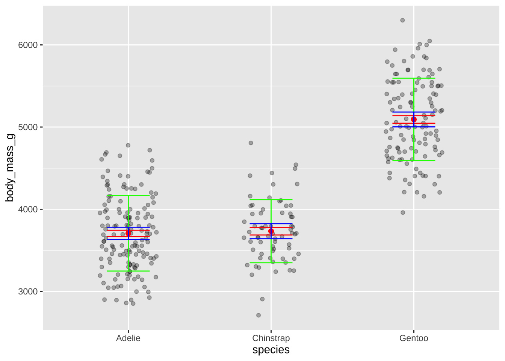

library(tidyverse)
library(rio)
library(fabricerin)
library(visdat)
library(vtree)ping <- import("03_datos/pinguinos.xlsx")head(ping)## species island bill_length_mm bill_depth_mm flipper_length_mm body_mass_g
## 1 Adelie Torgersen 39.1 18.7 181 3750
## 2 Adelie Torgersen 39.5 17.4 186 3800
## 3 Adelie Torgersen 40.3 18.0 195 3250
## 4 Adelie Torgersen NA NA NA NA
## 5 Adelie Torgersen 36.7 19.3 193 3450
## 6 Adelie Torgersen 39.3 20.6 190 3650
## sex
## 1 male
## 2 female
## 3 female
## 4 <NA>
## 5 female
## 6 maleping <- na.omit(ping)est <- ping %>%
group_by(species) %>%
summarise(media = mean(body_mass_g),
n = n(),
de = sd(body_mass_g),
ee = de/sqrt(n()),
li = media - 1.96*ee,
ls = media + 1.96*ee)## `summarise()` ungrouping output (override with `.groups` argument)est## # A tibble: 3 x 7
## species media n de ee li ls
## <chr> <dbl> <int> <dbl> <dbl> <dbl> <dbl>
## 1 Adelie 3706. 146 459. 38.0 3632. 3781.
## 2 Chinstrap 3733. 68 384. 46.6 3642. 3824.
## 3 Gentoo 5092. 119 501. 46.0 5002. 5183.ggplot(ping, aes(x = species, y = body_mass_g)) +
geom_jitter(width = 0.2, alpha = 0.3) +
geom_point(data = est, aes(x = species, y = media), color = "red", size = 2) +
geom_errorbar(data = est, aes(x = species, y = media, ymin = media - de, ymax = media + de), width = 0.3, color = "green") +
geom_errorbar(data = est, aes(x = species, y = media, ymin = media - ee, ymax = media + ee), width = 0.3, color = "red") +
geom_errorbar(data = est, aes(x = species, y = media, ymin = li, ymax = ls), width = 0.3, color = "blue")